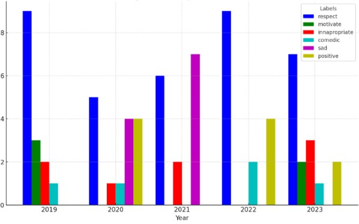
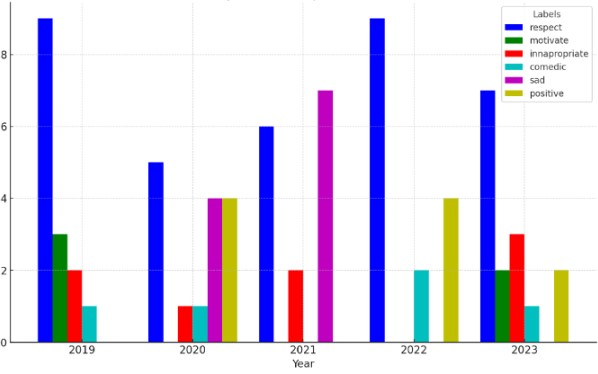

Data Collection & Curation
The data collected for this project was done by gathering a collection of Instagram posts from the years 2019-2023 to cover before, during, and after the pandemic. In doing so, I took the top 5 posts from each year and gathered data on the type of comments that the community added to them to gauge their mental states. From this, I put together a dataset inkling features of name, year, likes, hashtags, comment 1, comment 2, and comment 3. The purpose for these features is to gauge the types of posts that were popular during specific time frames along with how the community felt about them.
Analyzing the Cultural and Social Impact of COVID-19 Through Digital Narratives
Introduction
This project proposes to examine the cultural and social impact of the COVID-19 pandemic through the lens of digital narratives focused social media posts. Given the unprecedented global reach of the pandemic, digital platforms have played a crucial role in shaping public perception, spreading information, and facilitating communal expressions of grief, solidarity, and resilience. Instagram, being one of the leading social media platforms, serves as an outlet for many posts that can reflect and affect the mental states of its users. By analyzing posts and how the community interacts with them, this research aims to uncover how digital narratives have contributed to understanding and navigating the COVID-19 crisis, reflecting broader themes in digital culture and human-computer interaction within the humanities.
In a study labeled “The bright and dark sides of social media use during COVID-19 lock down: Contrasting social media effects through social liability vs. social support” it talked about how during the COVID-19 lock down, people's mental states while using social media revealed a dual nature. Based on survey data from 494 U.S. social media users, they identified two distinct mechanisms by which social media impacts users' psychological outcomes. Firstly, when social media use leads to perceived social support, it positively influences individuals’ cognitive appraisals of the lock down. This means users feel more capable of handling the situation, resulting in reduced negative emotions such as anger, anxiety, and loneliness. This support can make individuals feel less isolated and more connected, providing emotional comfort and practical help during tough times.
Conversely, the study found that social media could also increase feelings of social liability where users feel obliged to support others, which can be overwhelming. This sense of obligation negatively affects their cognitive appraisals and emotional responses. People experiencing high social liability reported worse mental health outcomes, feeling more anxious, stressed, and lonely due to the perceived pressures of maintaining social ties and supporting others through social media. This article highlights more of the psychological impact social media had during the Covid-19 period and how people were mainly broken up into their groups based on how they interact with it. My study aims to take a step further to actually seeing some of the posts that could have led to the conclusions drawn from other studies.
Data Analysis & Methods
From the data, I drew a visualization that would show the change in usage of the labels over different periods of time. Once I got to this step, I realized that most of the data collected was irrelevant to the conclusion that I wanted to draw. Because of this, I recreated a separate graph containing data with just the comments and years so I could draw a graph that would show the types of comments that were sent over the different periods of COVID.
Other studies mostly focused on the concept of usage of devices and social media platforms rather than the impact they had on users. Research conducted by Werling, Walitza, Grunblatt, and Drechsler showed that their survey highlighted significant percentage increases in screen media use among children and adolescents during the COVID-19 lock down, particularly in smartphone and tablet/PC use, gaming, and social media activities. Post-pandemic, while the general trend showed a reversion to pre-pandemic levels of media use, specific behaviors like gaming in males did not fully return to their original levels, indicating a lasting impact of the lock down on certain media habits. The article provides a view of how the lock down affected media use among youths with mental health concerns, emphasizing the temporary nature of this increase for many but also pointing out areas where changes persisted.
Furthermore, the research article aligns with broader studies on the impact of digital narratives during the COVID-19 pandemic, particularly in terms of shaping public sentiment and behavior. The specific statistics noted, such as a significant increase in screen time with smartphones and tablets among children and adolescents—with usage exceeding four hours a day rising to 25% and 17% respectively during lock down—illustrate the dramatic shift in media consumption. Gaming and social media usage also surged, with reports indicating that excessive gaming rose from 2% before the pandemic to 7% during it, and similar increases observed in social media use. These figures are integral to understanding the broader implications of digital media during emergency settings and help frame discussions around strategies to maximize benefits while minimizing potential negative impacts of digital media use.

Conclusion
By focusing on the analysis of digital narratives surrounding COVID-19, this project aimed to provide a comprehensive examination of the pandemic's cultural and social impact. Through a data-driven, scholarly approach, the project displayed the change in community interaction and mental state through the Covid-19 pandemic. Overall, it is observed that posts with sadder interactivity from the community were more common during the pandemic, posts that had people being respectful decreased as the pandemic begun but then increased overtime, and posts with positive comments gradually increased from the beginning of the pandemic to the end.
This project has taught me a lot about how to apply computational methods such as data analytics with topics in humanities. Many of the scholarly research articles that we use as students use lots of the techniques learned throughout the process of this project. Working on this project gave me a deeper understanding of how those articles process and display data. The most notable technique I learned about is the actual connection between the data and the topic of humanities. After deciding on the topic I was going with, finding out how I was going to gather data to support my project proved challenging. To overcome this, I looked back at what my topic was and what point I was trying to prove along with what kind of information, or statistics could support it. Others looking to utilize this data may want to look for ways to categorize posts further based on what the message of the posts were, more categories for kinds of interactions, and scoring the interactions based on mental status.
Work Cited
Cho, Hichang, et al. The Bright and Dark Sides of Social Media Use during COVID-19 Lockdown: Contrasting Social Media Effects through Social Liability vs. Social Support, U.S. National Library of Medicine, Sept. 2023, www.ncbi.nlm.nih.gov/pmc/articles/PMC10123536/.
Kolmar, Chris. “53 Stunning Social Media Statistics [2023]: Facts about Social Media Phones in the U.S.” Zippia, 12 May 2023, www.zippia.com/advice/social-media-statistics/.
Werling, Anna Maria, et al. Media Use before, during and after COVID-19 Lockdown According to Parents in a Clinically Referred Sample in Child and Adolescent Psychiatry: Results of an Online Survey in Switzerland, W.B. Saunders, 3 July 2021, www.sciencedirect.com/science/article/pii/S0010440X21000389#:~:text=Excessive%20social%20media%20activities%20(more,by%20gender%20and%20age%20(Fig.
Raymond Wong